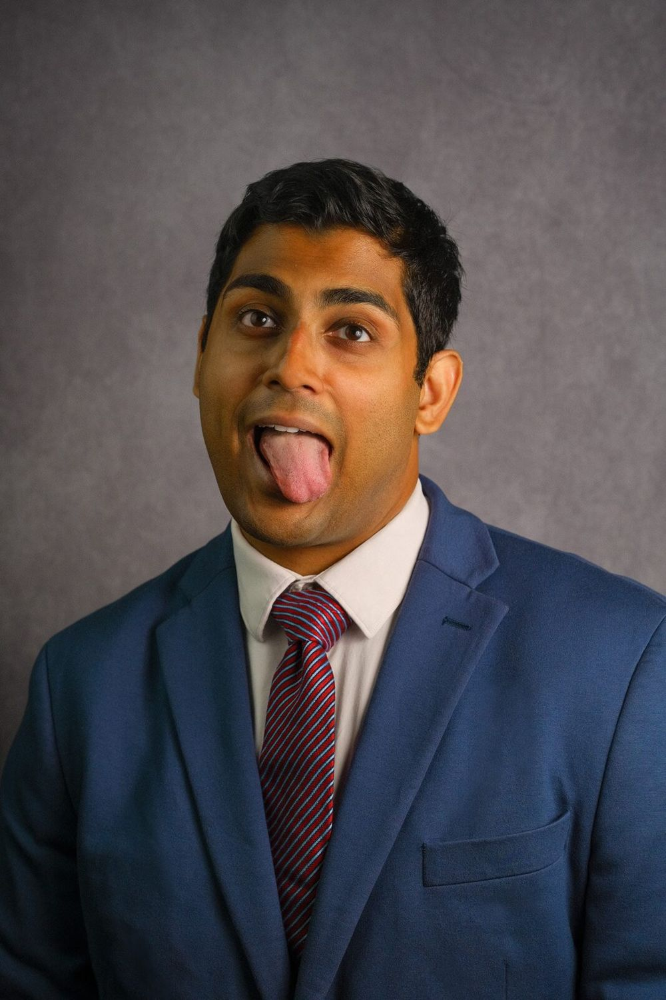

About Me


I'm Vishal John, a second-year medical student at the University of Louisville School of Medicine. My interest in medicine is rooted in years of hands-on research — most notably at the Koschmann Lab at the University of Michigan, where I worked as a Clinical Research Technician studying pediatric brain cancer. There, I co-authored publications on liquid biopsy techniques, presented first-author research at the BioInnovation in Brain Cancer Symposium, and developed methods for simulating the tumor microenvironment using stem cell-derived organoids.
Before medical school, I served as Project Lead at miRcore, a nonprofit dedicated to democratizing STEM education through bioinformatics training and the Citizen Scientist Sequencing Initiative — an effort to give students direct ownership of their own genomic data.
My commitment to medicine extends beyond the laboratory. I serve on the leadership team of Rock Cancer, a program providing free rock climbing experiences to young patients with cancer, and have volunteered since 2021 at Saint Andrew's Breakfast Program in Ann Arbor, which provides meals and essential services to the city's unhoused population.
I believe that becoming a good physician requires equal parts scientific rigor and genuine investment in people — and I try to bring both to everything I do.